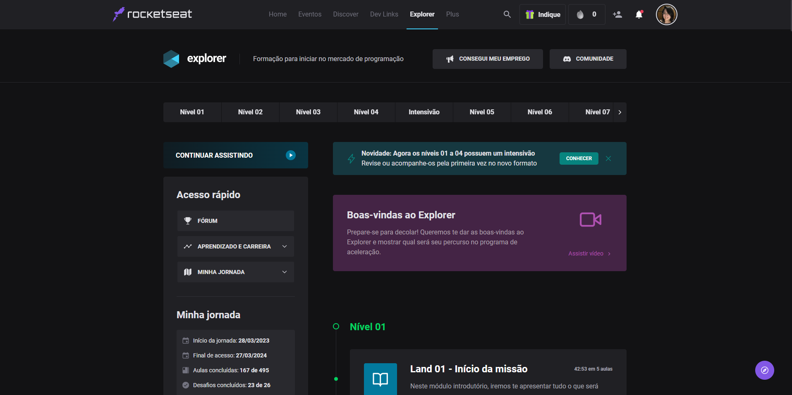

27 de Março de 2023
Programa de Formação Explorer - Turma 11

Liberação dos dois primeiros níveis, sendo o Nível 1 sobre o Início da
Missão (Land) e Fundamentos da Programação Web (Stage) e o Nível 2
sobre Objetivos e Planejamento (Land) e Introdução ao HTML e CSS
(Stage).